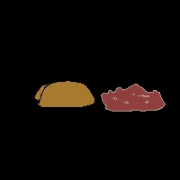

Tacos and Rice

Description
These tacos are made in the air frier. This recipe is a two-for-one because it includes spanish rice.
Ingredients
- 1 lb ground beef
- 1 package low sodium, mild taco seasoning
- Corn tortillas
- Cooking spray
Steps
- Brown the ground beef and use seasoning as indicated on packet.
- Warm tortillas in the microwave, covered with damp towel.
- Spray fryer with cooking spray.
- Place meat in corn tortillas and place in air fryer.
- Air fry for 5 to 8 minutes, until desired crispiness.
Bonus Spanish Rice recipe
Ingredients
- 2 c parboiled rice
- 1 4 oz can tomato sauce
- 3 tbs oil
- 3.5 c water
- Garlic powder, onion powder, cumin, chile powder
Steps
- Heat oil in pot on medium heat.
- Add rice and cook until slightly toasted.
- Increase heat to high and add water, tomato sauce, and spices. Bring to boil.
- Reduce heat to simmer and cook for 20 minutes.